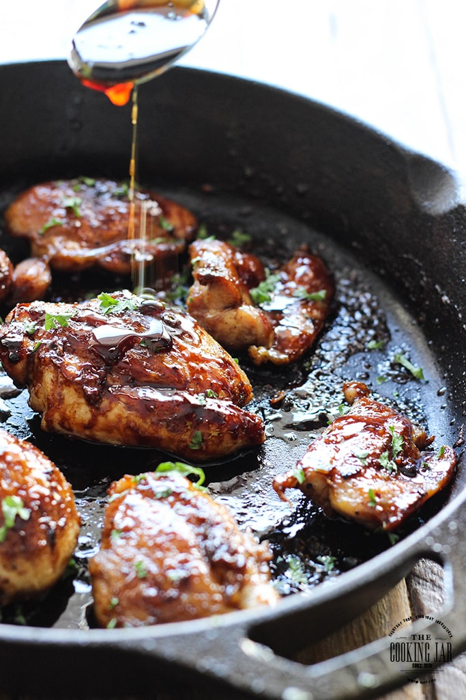

Honey garlic chicken

Honey Garlic chicken
Today we are making some delicious, honey garlic chicken. With the same, much-loved flavor profile of honey garlic shrimp and honey garlic salmon, we get to enjoy everyones favorite sauce with boneless, skinless chicken breasts or thighs.
It is an addictive sauce with a sticky, sweet and savory glaze that works great with almost every kind of protein.
Ingredients
- 2 chicken breasts
- 1 cup of flour
- butter
- garlic
- vinegar
- soy sauce
- honey
Steps
- Split chicken breast in half so 2 breasts makes 4 pieces. amazing honey garlic sauce.
- Dust chicken with flour (gives the chicken a slight crust so the sauce clings to it better!)
- Sear chicken, add butter, garlic, vinegar, soy sauce, honey
- Simmer until the sauce thickens. Turn chicken to coat in the